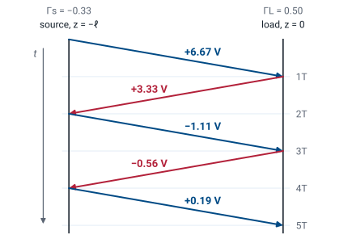
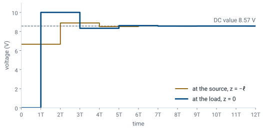

L14 - Transients#
Transients
Today we close a switch and follow the voltage step as it bounces between the ends of the line.
Lesson 14 · Module 1: Foundations · Maj Ellis · Dr. Neil Rogers
Learning Objectives
- I can plot the transient response of a load connected to a source through a transmission line.
Every lesson so far assumed a sinusoidal source that had been running long enough for the line to settle. Digital signals are not like that: a logic gate switches from 0 to 3.3 V in a nanosecond, and the line has to carry that step. Today we connect a DC source to a line through a switch and follow what happens after it closes. The step travels down the line, reflects from the load, travels back, reflects from the source, and keeps bouncing, and each reflection changes the voltage at the load by a smaller amount. We draw the whole history on a bounce diagram, read the load voltage off it, and show that the bounces add up to exactly the voltage-divider answer from circuit theory.
Where We Were
Lesson 5: on a lossless line, every wave carries current \(\frac{V}{Z_0}\) and travels at
Lesson 6: a load reflects
Lesson 5 showed that in a single traveling wave the ratio of voltage to current is \(Z_0\), and that on a lossless line the phase velocity does not depend on frequency. Lesson 6 derived the reflection coefficient from the boundary condition at a load. Both results came from sinusoidal phasors. Today the source is a step, so the first task is to confirm that the same two results hold for a step, and then we apply them at both ends of the line.
A Step on a Lossless Line
Try \(v(z,t) = f\left(t - \frac{z}{v_p}\right)\) and \(i(z,t) = \frac{1}{Z_0} f\left(t - \frac{z}{v_p}\right)\) in the first lossless telegrapher’s equation:
The lossless telegrapher’s equations from Lesson 3 hold for any waveform, not only sinusoids, so we can test a step directly. We guess that the voltage is any function \(f\) of the single variable \(t - z/v_p\), which describes a shape moving in the \(+z\) direction at speed \(v_p\), and that the current is the same shape divided by \(Z_0\). By the chain rule, differentiating with respect to \(z\) brings out a factor of \(-1/v_p\), and differentiating with respect to \(t\) brings out a factor of one, where \(f'\) is the derivative of \(f\) with respect to its argument. Substituting \(v_p = 1/\sqrt{L'C'}\) and \(Z_0 = \sqrt{L'/C'}\), the two sides are equal. The second equation checks the same way. So on a lossless line a step travels at \(v_p\) without changing shape, and its current is its voltage over \(Z_0\).
Closing the Switch
At \(t = 0^+\) the source sees only \(Z_0\):
A source with voltage \(V_s\) and internal resistance \(Z_s\) connects to the line at \(z = -\ell\) through a switch that closes at \(t = 0\). Immediately afterward, the step has traveled only an infinitesimal distance, and it carries no information about the load yet. The only wave on the line is the incident wave, whose voltage \(V_1^+\) and current \(I_1^+\) are in the ratio \(Z_0\), so the line looks to the source like a resistor of value \(Z_0\). Kirchhoff’s voltage law around the source and the line’s input gives a voltage divider between \(Z_s\) and \(Z_0\). The load does not appear in the result.
Reflection at the Load
The step reaches the load at \(t = T\), where
and reflects:
The step takes a time \(T = \ell/v_p\), the one-way delay, to reach the load. Until then the load sees nothing. When the step arrives, the voltage and current at the load must satisfy \(V = Z_L I\), and the derivation of Lesson 6 applies without change: a single incident wave satisfies the load only if \(Z_L = Z_0\), so a reflected wave appears with amplitude \(\Gamma_L V_1^+\). For a resistive load, \(\Gamma_L\) is real. The load voltage jumps from zero to \(V_1^+(1 + \Gamma_L)\), the transmission coefficient times the incident step.
Reflection at the Source
At \(t = 2T\) the reflected wave reaches the source. Subtract the \(t = 0^+\) equation from KVL with three waves present:
When the reflected wave arrives back at the source, the source must again satisfy Kirchhoff’s voltage law, and a new forward wave \(V_2^+\) appears. The total voltage at the source end is now the sum of three waves, and the total current is the sum of their currents, with the backward wave’s current subtracting. Subtracting the equation the source satisfied at \(t = 0^+\) removes \(V_s\) and \(V_1^+\), which leaves a boundary condition on \(V_1^-\) and \(V_2^+\) alone. Collecting terms gives \(V_2^+(Z_s + Z_0) = V_1^-(Z_s - Z_0)\). The returning wave sees the source resistance as its load, and the source reflects it with \(\Gamma_s\), the source reflection coefficient. The ideal voltage source itself does not reflect anything new, because its voltage never changes after \(t = 0\).
The Bounce Diagram

Each wave produces the next when it reaches an end, so the amplitudes form a sequence: \(V_1^+\), then \(\Gamma_L V_1^+\), then \(\Gamma_s\Gamma_L V_1^+\), and so on, each one multiplied by the reflection coefficient at the end it just reached. A bounce diagram keeps track of them. Position runs across, from the source at \(z = -\ell\) to the load at \(z = 0\), and time runs down. Each wave is a line that crosses the diagram in one delay \(T\), labeled with its amplitude. The figure shows the worked example below: a 10 V step through \(25\ \Omega\) into a \(50\ \Omega\) line ending in \(150\ \Omega\), so \(V_1^+ = 6.67\) V, \(\Gamma_L = 0.5\), and \(\Gamma_s = -1/3\). To find the voltage at any point and time, we add every wave that has reached that point by that time.
The Voltage at the Load
The load sees two new waves at each odd multiple of \(T\): one arriving and the one it reflects. At \(t = T\) those are \(V_1^+\) and \(\Gamma_L V_1^+\). The next forward wave, \(\Gamma_s\Gamma_L V_1^+\), arrives at \(t = 3T\), together with its reflection, which multiplies it by \((1 + \Gamma_L)\) again. Factoring out \(V_1^+(1 + \Gamma_L)\), each round trip adds one more power of \(\Gamma_L\Gamma_s\). The load voltage is a staircase with a step every \(2T\).
The Load Voltage Over Time

The figure plots the staircase for the worked example, at both ends of the line. The load voltage overshoots to 10 V at \(t = T\), because the load is larger than \(Z_0\) and \(\Gamma_L\) is positive. The source reflection is negative, so the next correction pulls it back down to 8.33 V, and the corrections alternate in sign from then on. The voltage at the source starts at the divider value \(V_1^+ = 6.67\) V and changes every \(2T\) as well. Both ends settle to the same value, 8.57 V, as the steps shrink by a factor of \(\vert\Gamma_L\Gamma_s\vert = 1/6\) each round trip.
The Steady State
After many round trips, the load voltage is the sum of a geometric series with ratio \(\Gamma_L\Gamma_s\). For passive resistors each reflection coefficient lies between \(-1\) and \(1\), and unless both are \(\pm 1\) the magnitude of the ratio is less than one, so the series converges to \(1/(1 - \Gamma_L\Gamma_s)\). To simplify the result, we write each factor in terms of the impedances. Adding one to \(\Gamma_L\) over a common denominator gives \(2Z_L/(Z_L + Z_0)\). For the denominator, we put both terms over the product of the two sums and expand the numerator: the \(Z_L Z_s\) and \(Z_0^2\) terms cancel, and the four cross terms leave \(2Z_0Z_L + 2Z_0Z_s\).
The Steady State Is the DC Divider
The line drops out. At DC it is a pair of wires.
Substituting \(V_1^+\) from the turn-on divider and the two factors from the previous frame, the factors of \(Z_s + Z_0\), \(Z_L + Z_0\), and \(2Z_0\) all cancel. What remains is the voltage divider between the source resistance and the load, the answer circuit theory gives for a source wired directly to a load. The line changes how the voltage gets there, not where it ends up. This agrees with Lesson 3: at DC the wavelength is infinite, every line is electrically short, and the line behaves as an ideal pair of wires. For the worked example, \(V_L(\infty) = 10 \times 150/175 = 8.57\) V.
Worked Example: A 400 m Line
\(V_s = 10\) V, \(Z_s = 25\ \Omega\), \(Z_0 = 50\ \Omega\), \(Z_L = 150\ \Omega\), \(\ell = 400\) m, \(v_p = 2 \times 10^8\) m/s:
\(t\) |
New waves at the load |
\(V_L\) |
|---|---|---|
\(0\) to \(T\) |
none |
\(0\) |
\(T\) to \(3T\) |
\(6.67 + 3.33\) |
\(10.00\) V |
\(3T\) to \(5T\) |
\(-1.11 - 0.56\) |
\(8.33\) V |
\(5T\) to \(7T\) |
\(0.19 + 0.09\) |
\(8.61\) V |
Worked example — the first three steps at the load
The one-way delay is \(T = \ell/v_p = 400/(2 \times 10^8) = 2\ \mu\)s. At turn-on,
and the two reflection coefficients are
The waves are \(6.67\), \(0.5 \times 6.67 = 3.33\), \(-\frac{1}{3} \times 3.33 = -1.11\), \(0.5 \times (-1.11) = -0.56\), then \(0.19\) and \(0.09\) V. Adding the pairs that reach the load gives the table: the load sees nothing for \(2\ \mu\)s, jumps to 10 V, and then settles in smaller and smaller steps toward \(8.57\) V. After \(7T = 14\ \mu\)s it is within \(0.01\) V of the final value.
Watch the Step Bounce
The widget runs the worked example. The top panel shows the voltage along the line at the time on the slider, and the bottom panel traces the voltage at the source and at the load up to that time. Press play and watch the 6.67 V step cross the line in one delay \(T\), then watch each reflection add or subtract a smaller step. Now set \(R_L = 50\ \Omega\): the load is matched, nothing reflects, and the line settles at \(T\). Set \(R_s = 50\ \Omega\) with any load: the source absorbs the first reflection, and the line settles at \(2T\). Set \(R_L = 1000\ \Omega\) and \(R_s = 0\) to see a nearly open line driven by a near-ideal source ring for a long time.
Special Cases
Case |
Result |
|---|---|
Matched load, \(Z_L = Z_0\) |
Settled everywhere at \(T\) |
Matched source, \(Z_s = Z_0\) |
Settled everywhere at \(2T\) |
Open load, \(\Gamma_L = 1\) |
Load jumps to \(2V_1^+\) |
Shorted load, \(\Gamma_L = -1\) |
Load stays at zero |
Four cases cover most of what you will meet in practice. A matched load absorbs the first wave completely, so the load voltage rises once and stays, which is why high-speed digital lines end in a resistor equal to \(Z_0\). A matched source absorbs the first reflection instead, so the load voltage steps once at \(T\) and the whole line settles after one round trip; this is the idea behind series termination of a digital driver. An open end doubles the arriving step, and a short cancels it. In every case the final value is the DC divider.
Summary
Symbol / idea |
What it is |
Number to remember |
|---|---|---|
Waveform on a lossless line |
Any shape travels unchanged at \(v_p\), with current \(\frac{V}{Z_0}\) |
\(f\left(t - \frac{z}{v_p}\right)\) |
Turn-on |
The source sees only \(Z_0\) |
\(V_1^+ = V_s\frac{Z_0}{Z_s + Z_0}\) |
\(T\) |
One-way delay |
\(\frac{\ell}{v_p}\) |
\(\Gamma_L\), \(\Gamma_s\) |
Reflection at the load and at the source |
\(\frac{Z_L - Z_0}{Z_L + Z_0}\), \(\frac{Z_s - Z_0}{Z_s + Z_0}\) |
Bounce diagram |
Position across, time down, each wave labeled |
each wave \(\times\) the next end’s \(\Gamma\) |
Steady state |
Geometric series in \(\Gamma_L\Gamma_s\) |
\(V_s\frac{Z_L}{Z_L + Z_s}\), the DC divider |
Matched load or source |
Settles at \(T\) or \(2T\) |
no ringing |
Practice
Where This Is Going
Lessons 15 and 16: the reflection coefficient, measured. You calibrate a network analyzer, measure known loads, and identify an unknown device.
Today closes the theory of Module 1: a line’s waves, its impedance, its reflections, matching, the Smith chart, and now its response to a step. The next two periods put a vector network analyzer in your hands. It launches a wave down a cable, measures the wave that comes back, and reports \(\Gamma\) across a band of frequencies, which is every quantity from Lessons 6 through 13 on one screen. Lesson 15 calibrates the instrument and measures loads whose reflection coefficients you can predict; Lesson 16 uses it to identify a device you cannot see.
Before Lesson 15, read the whole lab packet and the NanoVNA user’s guide, and work the predictions the packet asks for.